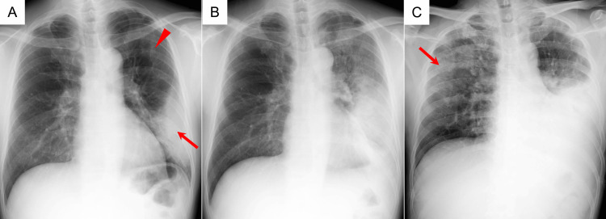

Legionella pneumophila is the primary cause of legionnaires' disease, a potentially fatal kind of pneumonia. Clinical signs can include anything from respiratory ailments to pneumonia that progresses quickly and causes systemic problems. After exposure, symptoms often appear two to ten days later. The diagnosis cannot be confirmed by symptoms alone because the first presentation is similar to other types of community-acquired pneumonia (Viasus et al., 2022).
Symptoms and presentation
Fever, chills, cough, dyspnea, headache, exhaustion, and myalgia are typical symptoms. Additionally, patients may have nausea, diarrhea, discomfort in the abdomen, disorientation, or altered consciousness. Although they are not specific to Legionnaires' disease, these concomitant symptoms are clinically significant. According to a retrospective analysis of 50 patients, typical presentations included neurological, gastrointestinal, and respiratory symptoms (Lupia et al., 2023).
Extrapulmonary manifestations
Clinical evaluation may be complicated by extrapulmonary involvement. Hyponatremia, elevated inflammatory markers, and altered liver or kidney function are examples of laboratory abnormalities; however, none of these are diagnostic in and of themselves (Rello et al., 2024). Hepatic abnormalities can sometimes dominate the presentation, as seen by an uncommon case with painless jaundice and a liver enzyme pattern similar to alcoholic hepatitis (Eidy et al., 2024). These case studies show potential rather than how frequently these manifestations occur.
Imaging and severe complications
Although radiographic findings cannot accurately differentiate a Legionella infection from other pneumonias, chest imaging may show pulmonary infiltrates or consolidation. Acute respiratory distress syndrome (ARDS), septic shock, hypoxemic respiratory failure, and multiorgan dysfunction are all possible outcomes of severe illness (Rello et al., 2024). 58% of the 162 intensive care patients in a multicenter study needed invasive mechanical ventilation, 45% experienced ARDS, and 12% passed away within 28 days. These percentages do not apply to all people with Legionnaires' illness, but rather to critically ill patients (Dartevel et al., 2025).

Prognosis and patient risk
Patient groups differ in terms of disease severity and prognosis. Eight of the eleven deaths in a Belgian retrospective analysis were hospital-acquired, accounting for 26% of 50 cases. The clinical significance of disease severity upon diagnosis was highlighted by the correlation between worse outcomes and higher organ failure scores (moretti et al., 2022). In another retrospective cohort, nonsurvivors had higher rates of neurological symptoms, delayed diagnosis, cardiovascular comorbidities, and older age (Lupia et al., 2023).
During hospitalization, clinical deterioration may occur. Despite comparable mortality, patients with Legionella pneumonia in a sizable US cohort had greater late decompensation than other studied pneumonia patients (Allgaier et al., 2021). The burden of severe illness was demonstrated by a comprehensive assessment of hospitalized patients with respiratory failure, which also revealed significant critical care and mechanical ventilation needs (Ruiz-Spinelli & Rello, 2024). Crucially, neither hyponatremia nor diarrhea should be considered conclusive clinical indicators. Similarly, a steady appearance does not exclude out respiratory worsening in the future. To assess severity, clinical findings should be assessed collectively rather than separately (Ruiz-Spinelli & Rello, 2024).
Clinical monitoring and assessment
Thus, respiration rate, oxygen saturation, mental state, blood pressure, and indications of organ malfunction should all be included in the assessment. Confusion, hypotension, or rising oxygen requirements call for an immediate reevaluation. In general, pulmonary symptoms are combined with potentially significant gastrointestinal, neurological, and systemic abnormalities in Legionnaires' illness. Clinical evaluation must acknowledge this diverse presentation and closely monitor for consequences (Viasus et al., 2022).
References
- Allgaier, J., Lagu, T., Haessler, S., Imrey, P. B., Deshpande, A., Guo, N., & Rothberg, M. B. (2021). Risk Factors, Management, and Outcomes of Legionella Pneumonia in a Large, Nationally Representative Sample. Chest, 159(5), 1782–1792. https://doi.org/10.1016/j.chest.2020.12.013
- Dartevel, A., Galerneau, L.-M., Peigne, V., Sedillot, N., Ehrmann, S., Lautrette, A., Klouche, K., Poissy, J., Thiery, G., Sauneuf, B., Rigaud, J.-P., Ramakers, M., Daubin, C., Schwebel, C., & Terzi, N. (2025). Clinical features and prognosis of severe legionnaires’ disease requiring intensive care unit admission: a multicentric retrospective cohort study. Pneumonia, 17(1), 21. https://doi.org/10.1186/S41479-025-00173-Z
- Eidy, H., Senger, B., Steele, J., & Kathawa, J. (2024). An Atypical Presentation of Legionnaires’ Disease. Cureus, 16(5), e60856. https://doi.org/10.7759/CUREUS.60856
- Lupia, T., Corcione, S., Shbaklo, N., Rizzello, B., De Benedetto, I., Concialdi, E., Navazio, A. S., Penna, M., Brusa, M. T., & De Rosa, F. G. (2023). Legionella pneumophila Infections during a 7-Year Retrospective Analysis (2016–2022): Epidemiological, Clinical Features and Outcomes in Patients with Legionnaires’ Disease. Microorganisms, 11(2), 498. https://doi.org/10.3390/MICROORGANISMS11020498
- moretti, M., Allard, S. D., Dauby, N., De Geyter, D., Mahadeb, B., Miendje, V. Y., Balti, E. V., & Clevenbergh, P. (2022). Clinical features of Legionnaires’ disease at three Belgian university hospitals, a retrospective study. Acta Clinica Belgica, 77(4), 753–759. https://doi.org/10.1080/17843286.2021.1978211
- Murakami, Y., Morosawa, M., Nozaki, Y., & Takesue, Y. (2024). Legionella Pneumonia Undetected by Repeated Urinary Antigen Testing With Ribotest® Legionella. Cureus, 16(11), e74035. https://doi.org/10.7759/CUREUS.74035
- Rello, J., Allam, C., Ruiz-Spinelli, A., & Jarraud, S. (2024). Severe Legionnaires’ disease. Annals of Intensive Care, 14(1), 51. https://doi.org/10.1186/S13613-024-01252-Y
- Ruiz-Spinelli, A., & Rello, J. (2024). Legionella pneumonia in hospitalized adults with respiratory failure: Quinolones or macrolides? European Journal of Internal Medicine, 120, 62–68. https://doi.org/10.1016/J.EJIM.2023.09.013
- Viasus, D., Gaia, V., Manzur-Barbur, C., & Carratalà, J. (2022). Legionnaires’ Disease: Update on Diagnosis and Treatment. Infectious Diseases and Therapy, 11(3), 973. https://doi.org/10.1007/S40121-022-00635-7